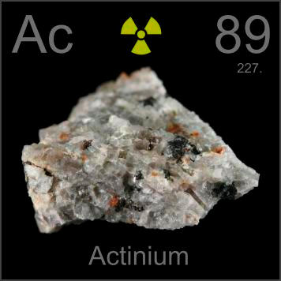

HOME
PREVIOUS
NEXT

Actinium
Atomic Weight: 227[note
Density: 10.07 g/cm3
Melting Point: 1050 °C
Boiling Point: 3200 °C
Invisibly tiny amounts of actinium occur in some radioactive minerals, hence this picture of a radioactive rock. Actinium is used in thermoelectric generators, where its short half-life lets it generate intense heat.